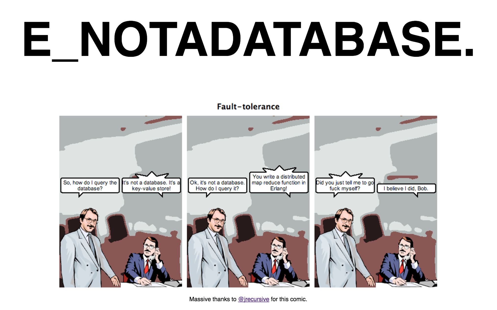
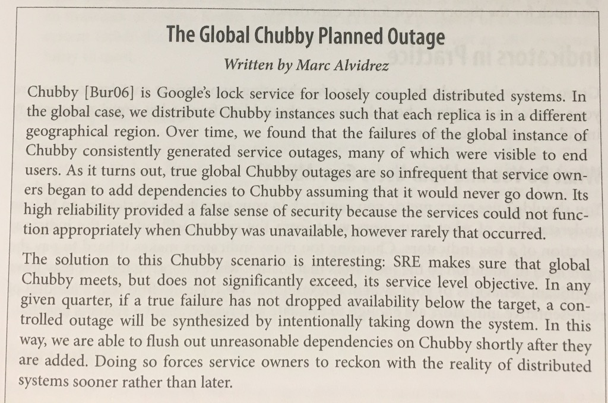

Infrastructure as Code with Terraform and AWS
Unit 3: A Short Primer on Distributed Systems
This 18F workshop is in the worldwide public domain.
Learning objectives
- Understand architectural implications of building distributed systems
- Know how the cloud enables building high availability systems
- Understand the trade-offs involved in building cloud native systems
Operations at web scale is the ability to consistently create and deploy reliable software to an unreliable platform that scales horizontally.— Jesse Robbins, "Master of Disaster" at Amazon, Operations is a Competitive Advantage (O'Reilly)
Unreliable platform

Unreliable platform
- If your system is on the internet, you're on an unreliable platform.
- Amazon regions have a 99.95% SLA for availability (including RDS)...
- ...but only if you use multiple availability zones.
Scaling horizontally
Destroy works of art
- Hosts should be disposable.
- Provisioning new hosts should be fully automated using versioned config.
- Our infrastructure should automatically detect failures and kill.
- If there's insufficient volatility, we should introduce more (e.g. chaos monkey).
Introduce failure
 Site Reliability Engineering: How Google Runs Production Systems, p39.Twelve Factor Apps
- Declarative formats for setup automation, to minimize time and cost for new developers;
- Clean contract with the underlying operating system, offering maximum portability;
- Suitable for deployment on modern cloud platforms
- Minimize divergence between development and production, enabling continuous deployment;
- Can scale up without significant changes to tooling, architecture, or development practices.
Cloud Native apps
- Make apps stateless so they can scale horizontally and fail arbitrarily;
- Make apps disposable so we can start them up fast and automatically;
- Separate packages from configuration information for all resources (remote or attached);
- Each bounded context gets its own app;
- Apps are independently testable and deployable;
- Treat logging as a remote service;
- Instrument everything! Localizing problems is hard in distributed systems, and some issues are emergent.
Unit 3 review
- Internet systems are distributed systems
- We need to architect for availability in the face of an unreliable platform
- Design for stateless, disposable apps and hosts that can be independently tested and deployed
- Be able to provision in a fully automated fashion from version control